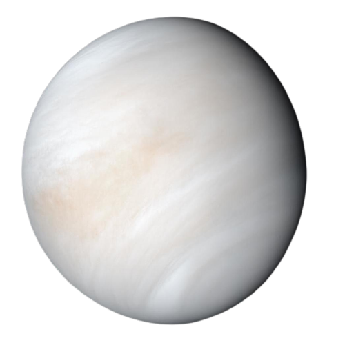
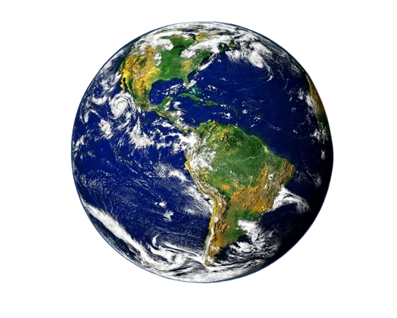
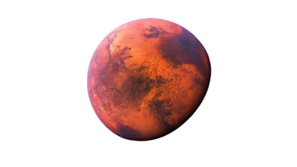
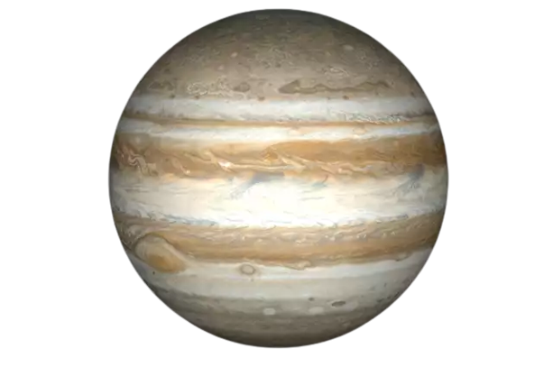
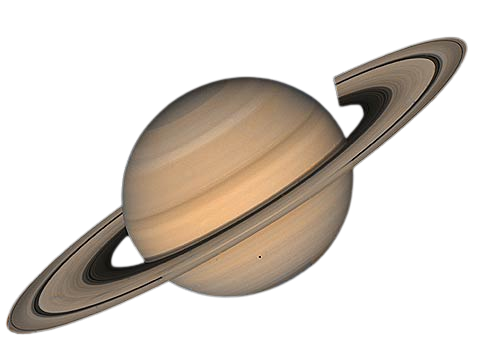
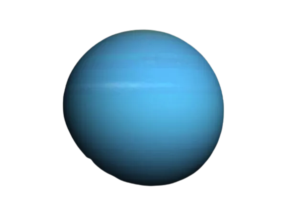
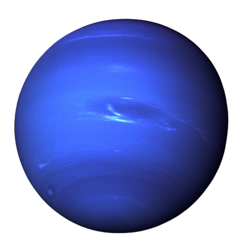

O que é o universo?
Segundo a astronomia, o universo é o conjunto de toda a matéria e energia existente. Nele existem cometas, planetas, estrelas, satélites, galáxias, nebulosas e outros.
Há cerca que 14 bilhões de anos atrás ocorreu algo que chamamos de BIGBANG, que assim originou diversos corpos celestas, e o conceito de espaço e tempo. Alguns cientistas acreditam que o universo seja infinito, e não apenas isso, que possam existir outros por aí.
Planetas do sistema solar
Mercúrio
Vênus
Terra
Marte
Júpiter
Saturno
Urano
Netuno
Curiosidades
A expressão "Universo Paralelo" é um conceito que faz refer~encia ao conceito de física quântica, que está relacionada com oa existência de outros universos e realidades desconhecidos e também ligado a imcompreensão de assimilar a dimensão do universo.
A luz do sol que vemos leva 499 segundos para chegar até nós, ou seja, podemos dizer que a luz que vemos é do passado. O mais louco de pensar é que se por algum milagre ela desaparecesse, nós só saberíamos oito minutos depois!
Apenas quatro planetas do nosso sistema solar são rochosos. Os outros são formados por um grande amontoado de gases presos por uma grande interação gravitacional, por isso são chamados de planetas gasosos. E por coincidência, são os planetas Júpiter, saturno, Urano e netuno, que são os maiores do nosso sistema e também os que apresentam mais massa, apesar de serem apenas formados por gases.
Quanto tempo sobreviveríamos em cada planeta?
Em Mercúrio você sobreviveria por apenas 90 segundos! Suas temperaturas são muito instáveis e loucas, podendo chegar na manhã à 426 graus e na noite -178 graus.
Em Vênus sua chance seria de um segundo, e isso se dá a vários fatores. sua temperatura, a atmosfera que apresenta 98% de dióxido de carbono e uma pressão de 90 vezes maior do que na terra.
Marte você poderia aproveitar por aproximadamente 80 segundos. Ironico, não? Já que é nosso primeiro canditado para colonização. Mas sua atmosfera é de 95% dióxido de carbono e uma temperatura médida de -62 graus.
No maior planeta do sistema solar nós sobreviveríamos por apenas um segundo também. Isso porque Júpiter apresenta ventos fortes e furacões que nosso corpo não poderia suportar. Entre muitos outros fatores.
Saturno é outro que também não passaríamos de um segundo. Assim como júpiter, nele existem ventos fortes que podem chegar a 1,8 mil km/h.
Em Urano não há um tempo certo de sobrevivência pois quase não há tempo para tal. A mistura de gases nos dissolveria quase que imediatamente.
No nosso último planeta, o Netuno, também não viveríamos mais que um segundo. As condições do planeta distruiriam tudo. Os ventos fortes de lá podem ultrapassar a velocidae do som!